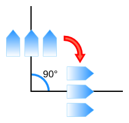
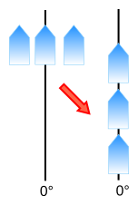

概要
CSS3 Writing Modesは左から右(ラテン語やインド語)、右から左(ヘブライ語やアラビア語)、双方向(ラテン語とアラビア語の同時使用)、縦組(アジア言語の文章)のような、世界各国の組方向をサポートするCSSの機能を定義している。
根本的に下から上へ進む文章はこのバージョンでは扱われない。関連する問題は[UTN22] を参照のこと。
この文書の位置づけ
このセクションは、公開時点でのこの文書の位置付けについて述べている。他の文書がこの文書を置き換えることがある。W3Cが現在公開しているリストとテクニカルレポートの最新版は、W3C technical reports
index (http://www.w3.org/TR/)で見つけることができる。
Working Draftでの公開は W3Cメンバーの支持を意味するものではない。下書きのドキュメントであり、いつでも更新、他のドキュメントによる置き換えや廃止扱いにされうる。これは、進行中の作業以外のものとしてこのドキュメントを引用することは不適切である。
(アーカイブされている) 公開メーリングリスト www-style@w3.org (参加手順はこちら) をこの仕様の議論に推奨している。eメールを送る際には、サブジェクトに “css3-writing-modes” を追加してほしい。できれば “[css3-writing-modes] …summary of
comment…”のように。
このドキュメントはCSS Working Group (
Style Activityの一環)で製作された。
このドキュメントは2004年2月6日のW3C特許ポリシーに従うグループによって製作された。W3Cはグループの成果を結びつけて作られたあらゆる開示特許の公開リストを管理しており、ここには特許開示の指示も含まれている。
本質的な特許請求の範囲に含まれると思われる特許について実際の知識を持っている人は、
W3C特許ポリシーの第6章に従い、情報を公開しなければならない。
以下の機能は抜ける恐れがあるもので、おそらくCRまでには落とされるだろう:
目次
1. Writing Modesの紹介
CSS3 Writing Modesは左から右(ラテン語やインド語)、右から左(ヘブライ語やアラビア語)、双方向(ラテン語とアラビア語の同時使用)、縦書き(アジア言語の文章)のような、世界各国の組方向をサポートするCSSの機能を定義している。
CSSのwriting modeは、‘writing-mode’, ‘direction’,
‘text-orientation’ のプロパティによって決定される。writing modeでは、
inline base direction(字詰め方向:1つの行で、1つの文字から次の文字へと続く方向)と
block flow direction(行送り方向:1つの行から次の行へと続く方向)によって定義されている:
inline base directionは、両端に開始と終了がある行の上に並べられたコンテンツの主方向である。
The ‘direction’
プロパティは要素の字詰め方向を指定し、‘unicode-bidi’ プロパティやテキスト固有の方向とともに、行内のinline-level contentの順序を決定している。
block flow directionは、
ブロックコンテナ内での、ブロックレベルボックスを積む方向や、行ボックスを積む方向である。
‘writing-mode’
プロパティは行送り方向を決定している。
horizontal writing mode(横書き)
はテキストの水平行を持つ。そして上方向や下方向へ行送りする。
vertical writing mode(縦書き)
はテキストの垂直行を持つ。そして右方向か左方向へ行送りする。
これらの言葉はvertical block flow (上方向や下方向への行送り)や
horizontal block
flow (左方向や右方向への行送り)と混同すべきではない。
混乱を避けるため、CSSの仕様ではこの後者の用語セットを用いていない。
Writing systemsは通常1つか2つのnative writing modesを持っている。いくつか例を示す:
- ラテン語を基本としたsystemでは、通常下方向(上から下)の行送り方向で、左から右の字詰め方向を使って書かれている。
- アラビア語を基本としたsystemでは、通常下方向(上から下)の行送り方向で、右から左の字詰め方向を使って書かれている。
- モンゴル語を基本としたsystemでは、通常右方向(左から右)の行送り方向で、上から下の字詰め方向を使って書かれている。
- ハン語を基本としたsystemでは、一般的に下方向(上から下)の行送り方向で、左から右の字詰め方向
か、左方向(右から左)の行送り方向で、上から下の字詰め方向を使って書かれている。
多くの雑誌と新聞は、同一ページにこれら2つのwriting modeを合わせて使うことになるだろう。
writing modeの ‘text-orientation’ コンポーネントは、 line
orientation と typesetting modeを決定し、glyph orientation
のようなテキストレイアウトの詳細を制御している。
writing modeとvertical textのさらに深い導入は、Unicode Technical Note #22 [UTN22] (HTML
version)を参照のこと。
1.1. モジュールの関係
このモジュールは[CSS21]のセクション8.6と9.10で定義されている ‘unicode-bidi’
と ‘direction’ の機能を置き換え、拡張する。
1.2. 値について
本仕様は[CSS21]に書かれたCSS property
definition conventions(CSSプロパティの定義規則)に従っている。 本仕様で定義されていない値の型は、CSS Level 2 Revision 1[CSS21]で定義されている。[CSS3COLOR]を例に挙げると、このモジュールを組み合わせて使うと、本仕様の中でも <color> の値の型の定義が拡張される。
これらの定義にリストアップされたプロパティの固有値に加えて、本仕様で定義されている全プロパティでも、これらのプロパティの値のように inherit keyword(キーワード継承)を受け入れる。読みやすさを考慮して、本件は明示的に繰り返さない。
2. 字詰め方向と双方向性
ほとんどの文字が左から右に書かれている一方で、いくつかの文字は右から左に書かれている。一部の文章、特にアラビア語かヘブライ語の文字で書かれ、その中に複数言語が混在する文脈があると、単一の(視覚的に表示された)ブロック内のテキストで複数方向が混在することがある。この現象はbidirectionality(双方向性), もしくは短く "bidi(バイダイ)"と呼ばれる。
Unicode standard (Unicode Standard Annex #9)
では、双方向テキストの適切な方向を決定するための複雑なアルゴリズムを定義している。このアルゴリズムは文字のプロパティの他に、埋め込みや上書きの明確なコントロールに基づいた暗黙的な部分で構成されている。CSSは適切な双方向レンダリングを実現するために、このアルゴリズムを頼りにしている。
‘direction’ と ‘unicode-bidi’
のプロパティは、作者にドキュメント言語の要素と属性を、このアルゴリズムとどうマッピングするか指定できるようにしている。
双方向性をもったテキストをサポートするユーザーエージェントは、強制
(bidi class B) 改行かブロック境界で中断されない全てのインラインボックスの配列に対しUnicode双方向アルゴリズムを適用しなくてはならない。この配列は双方向アルゴリズムでのparagraph(段落)単位を形成する。
‘unicode-bidi’の‘plaintext’が有効な場合を除き、段落埋め込みレベルはUnicodeアルゴリズムのP2とP3にあるヒューリスティックに得られたものよりも、むしろ段落中要素の‘direction’プロパティの値に応じて設定されている。通常、段落中要素は包含ブロックであるが、isolation(分離した)バイダイを含む段落では、分離したインライン要素がその代わりとなる。
テキストの書字方向が文章の構造と意味に依存していることから、ほとんどの場合
‘direction’と‘unicode-bidi’のプロパティは、マークアップ中でのバイダイ情報と、適合するCSSスタイルとを割り当てるべきである。ドキュメント言語がバイダイをコントロールするマークアップ機能を提供するのであれば、作者とユーザーはそれらの機能を使うべきであり、これらを上書きするCSSのルールを指定すべきではない。
HTML 4の仕様 ([HTML401], section 8.2) では、双方向性はHTML要素のふるまいであると定義している。HTML4の仕様には双方向性における問題の詳細情報が含まれている。
HTMLのユーザーエージェントがCSSのスタイル機能をOFFにすることができるので、スタイルシートが無い状態でも正しい双方向レイアウトを保証するため、我々はHTML作者に‘dir’属性と<bdo> 要素を使うよう忠告している。
2.1. 方向の指定: ‘direction’ プロパティ
| 名称:
| direction
|
| 値:
| ltr | rtl
|
| 初期値:
| ltr
|
| 適用対象:
| 全ての要素
|
| 継承:
| される
|
| パーセンテージ:
| N/A
|
| メディア:
| visual
|
| 算出値:
| 指定した値
|
このプロパティはテキストと行内の要素の書字方向、Unicode双方向アルゴリズムで使われる埋め込みと上書き (‘unicode-bidi’を参照) の方向を指定している。加えて、table(表)の行レイアウト順序、水平overflow(はみ出し)の方向、行内のテキストのデフォルトの並べ方、他に字詰めの基本方向に依存するものに作用している。
このプロパティの値の意味を以下に示す:
- ltr
- 左から右の方向になる。
- rtl
- 右から左の方向になる。
‘direction’プロパティは、‘unicode-bidi’
プロパティの値が ‘normal’であるインライン要素に指定されたバイダイの並び替えには何の影響も与えない。
ルート要素の‘direction’プロパティの値も初期包含ブロックへ伝搬され、‘writing-mode’プロパティの値と共にドキュメント全体の基本となる組方向を決定する (こちらを参照)。
注: HTML BODY要素の‘direction’プロパティはビューポート(コンテンツが表示される領域)に伝搬されない。この特殊な振る舞いはbackgroundとoverflowのプロパティにのみ適用される。
表のcolumn要素に指定された‘direction’ プロパティは、ドキュメントツリーにおいて列がセルの祖先でないため、列内のセルへは継承されない。このように、CSSは[HTML401]のsection 11.3.2.1.に書かれている "dir" 属性の継承ルールを簡単に取得することができない。
| 名称:
| unicode-bidi
|
| 値:
| normal | embed | [ isolate || bidi-override ] | plaintext
|
| 初期値:
| normal
|
| 適用対象:
| 全ての要素(しかしproseを参照のこと)
|
| 継承:
| されない
|
| パーセンテージ:
| N/A
|
| メディア:
| visual
|
| 算出値:
| 指定した値
|
このプロパティの値の意味を以下に示す。
- normal
- この要素は、双方向アルゴリズムに関してはレベルを追加する埋め込み(入れ子)を受け入れない。インライン要素だと、暗黙の並び替えは要素の境界を越えて作用する。
- embed
- インライン要素なら、この値は双方向アルゴリズムに関してレベルを追加する埋め込み(入れ子)を受け入れる。この埋め込んだレベルの方向は‘
direction’プロパティにより与えられる。要素の中では、並び替えは暗黙で行われる。これは、要素の始めだと、‘direction: ltr’に対しては LRE (U+202A)か、‘direction: rtl’に対しては RLE (U+202B)の追加に相当し、要素の終わりでは、 PDF (U+202C) の追加に相当する。この値はインライン要素でない場合、何の影響も及ぼさない。
- isolate
- Unicode双方向アルゴリズムのために、要素のコンテンツは、分離・独立し、‘
direction’プロパティによって書字方向が指定された段落の中にあるとされている。
そして(もし、あれば)バイダイ段落を含むバイダイ解決のために、要素自身がObject Replacement Character (U+FFFC) のように扱われる。(要素が複数行にわたって改行された場合、要素の各ボックスはObject Replacement Characterとして扱われる。)
- bidi-override
- インライン要素に対しては、この値は上書きを実現する。ブロックコンテナ要素に対しては、この値はその他のブロックコンテナ要素ではなく、そのインラインレベルの子孫への上書きを実現する。これは、要素の中においては、並び替えが‘
direction’
プロパティに従った順序に厳密であることを意味しており、双方向アルゴリズムの暗黙の部分は無視される。これは、要素の始めでは、‘direction: ltr’ に対しては LRO (U+202D)が、‘direction: rtl’ に対しては RLO (U+202E)の追加に相当し、要素の終わりでは PDF (U+202C) の追加に相当する。
- plaintext
-
Unicode双方向アルゴリズムのために、要素が包含ブロックを形成するためにあるバイダイ段落の書字方向は、通常、要素が計算した‘direction’では決定されない。しかし、ヒューリスティックなUnicodeアルゴリズムのルールP2とP3には従う。インライン要素では、ブロックコンテナを除き、この値は ‘isolate’と同様に振る舞う。字詰め方向は‘direction’の値ではなく、Unicodeのヒューリスティックなものを用いて決定される。
各バイダイ段落の中にある文字の最終的な順序は、上記のようにバイダイのコントロールコードが埋め込まれているものと同じであり、マークアップは削除されており、結果として得られる文字の順序は、スタイル付きテキストと同じ改行が生成されたplain text用のUnicode双方向アルゴリズム実装に渡されている。
このプロセスでは、‘unicode-bidi’プロパティが‘normal’以外の値、つまり要素に指定された‘direction’で強い文字(文字自身に方向を持つ)として扱われるような場合を除き、‘display:inline’で置換される要素はニュートラルな文字(右から左でも、左から右でも使用できる文字)として扱われる。他のアトミックなインラインレベルボックスは全て常にニュートラルな文字として扱われる。
インライン要素がバイダイ段落境界の周辺で分解された場合(例えば、ブロックや強制段落改行により分離された場合)、要素の終わりに相当するバイダイのコントロールコードは分解箇所の前に追加され、要素の開始に相当するコントロールコードは分解箇所の後ろに追加される。(言い換えれば、要素のどんな追加レベルや上書きも、段落改行で閉じられ、もう一方で再び開く。)
Unicodeアルゴリズムは追加レベルの制限が 61レベルであるため、適切な場合を除き、値が‘normal’以外の‘unicode-bidi’プロパティを使わないよう注意すること。 特に値が‘inherit’の場合は注意を払うこと。しかし、しかし、一般的に、ブロックとしての表示を意図している要素は、displayをinlineに変更しつつ、要素を維持するため‘unicode-bidi: isolate’ とするのが好ましい。(以下のサンプルを参照)
2.3. 双方向テキストの例
双方向テキストのXMLを使ったXMLドキュメントの例を以下に示す。これは重要な設計原理を説明している。ドキュメント言語の設計者は言語の適正さ(要素と属性)と添付されたスタイルシートの双方で、バイダイを考慮に入れるべきである。スタイルシートはバイダイのルールがスタイルのルールと分離されるように、またドキュメント言語のバイダイの振る舞いが保護されるよう、記述したルールが他のスタイルシートで上書きされないように設計されるべきである。
この例では、小文字が左から右で使われる文字を表し、大文字が右から左で使われる文字を表す。text streamはバッキングストア内の順で表示される。
<HEBREW>
<PAR>HEBREW1 HEBREW2 english3 HEBREW4 HEBREW5</PAR>
<PAR>HEBREW6 <EMPH>HEBREW7</EMPH> HEBREW8</PAR>
</HEBREW>
<ENGLISH>
<PAR>english9 english10 english11 HEBREW12 HEBREW13</PAR>
<PAR>english14 english15 english16</PAR>
<PAR>english17 <HE-QUO>HEBREW18 english19 HEBREW20</HE-QUO></PAR>
</ENGLISH>
これは任意のXMLであるので、スタイルシートは書字方向の設定に関与している。これはこのようなスタイルシートとなる:
/* Rules for bidi */
HEBREW, HE-QUO {direction: rtl; unicode-bidi: embed;}
ENGLISH {direction: ltr; unicode-bidi: embed;}
/* Rules for presentation */
HEBREW, ENGLISH, PAR {display: block;}
EMPH {font-weight: bold;}
HEWREW要素は、書字方向が右から左のブロックである。ENGLISH要素は書字方向が左から右のブロックである。PARは親要素から書字方向を継承するブロックである。よって、最初の2つのPARは右上から読まれ、最後の3つPARは左上から読まれる。HEBREWとENGLISHは話をわかりやすくするためだけに選ばれた要素名であることに注意すること。一般的に、要素名は言語を参照せずに構造を伝える必要がある。
EMPH要素はインラインレベル要素で、‘unicode-bidi’の値は‘normal’(初期値)であるので、テキストの順序には影響しない。一方、HE-QUO要素は埋め込みを行う。
行の長さが長い場合、このテキストの書式は次のようになる:
5WERBEH 4WERBEH english3 2WERBEH 1WERBEH
8WERBEH 7WERBEH 6WERBEH
english9 english10 english11 13WERBEH 12WERBEH
english14 english15 english16
english17 20WERBEH english19 18WERBEH
HE-QUOの埋め込みが、english19の右にHEBREW18を持ってきていることに注意すること。
行が改行されているなら、次のようになる:
2WERBEH 1WERBEH
-EH 4WERBEH english3
5WERB
-EH 7WERBEH 6WERBEH
8WERB
english9 english10 en-
glish11 12WERBEH
13WERBEH
english14 english15
english16
english17 18WERBEH
20WERBEH english19
HEBREW18がenglish19の前で読まれるべきなので、HEBREW18はenglish19の上の行にある。前の書式から長い行を改行するだけではうまくいかない。english19の最初のシラブルは前の行に収まっているが、右から左の方向を持つ文中の左から右の方向を持つ言葉のハイフン、もしくはその逆のハイフンは、通常、行の途中にハイフンを表示させないために抑制されていることに注意すること。
2.4. 双方向文中にあるインライン要素のためのボックスモデル
バイダイの再配置は論理的に連続しているテキストを分割して並び替えできるので、双方向テキスト行中のインラインボックスも分割・並び替えされうる。
インラインボックスを同じ方向にフロー(流し込み)できるようにするために(全て左から右か、全て右から左)、匿名のインラインボックスが生成されることに注意すること。
各ラインボックスのために、ユーザーエージェントは各要素に生成されたインラインボックスを取得し、マージン・ボーダー・パディングを表示順序(論理的な順序ではない)に従い描画しなければならない。要素が登場する最初のラインボックスにあるstart-most box(最初のボックス)は、start edge's margin(開始マージン)、border(ボーダー)、padding(パディング)を持つ。要素が登場する最後のラインボックスにある end-most box(最後のボックス)は、end edge's margin(終了マージン)、 border(ボーダー)、padding(パディング)を持つ。例えば、writing modeプロパティが‘horizontal-tb’の場合:
- 親要素の‘
direction’プロパティが‘ltr’なら、要素が登場する最初のラインボックスでは、一番左に生成されたボックスは左マージン、左ボーダー、左パディングを持つ。要素が登場する最後のラインボックスでは、一番右に生成されたボックスは右パディング、右ボーダー、右マージンを持つ。
- 親要素の‘
direction’プロパティが‘rtl’なら、素が登場する最初のラインボックスでは、一番右に生成されたボックスは右マージン、右ボーダー、右パディングを持つ。要素が登場する最後のラインボックスでは、一番左に生成されたほとんどのボックスは左パディング、左ボーダー、左マージンを持つ。
これと似たルールが縦組を保っている。
‘box-decoration-break’プロパティは、各ボックス両サイドにて装飾を描画するために、この振る舞いを上書きすることができる。[CSS3BG]
3. 縦書きの導入
この章は参考である。
CSS2.1の双方向テキストサポート拡張に加えて、このモジュールはCSSでの縦書きレイアウトサポートに必要なルールとプロパティを導入している。
主に水平の文字を配置していくラテン系の文字を使用した言語とは違い、中国語や日本語のようなアジア圏の言語は文字を垂直に配置する。下の日本語の例は、同じテキストを水平と垂直それぞれに配置したものである。水平の場合は、テキストは左から右に、そして上から下へ読まれる。垂直の場合は、テキストは上から下へ、そして右から左へ読まれる。左から右へ進む水平の場合における左端からのインデントは、上から下へ進む垂直の場合に変換すると、上端からのインデントになる。
中国語と日本語の行は右から左、もしくは上から下へ並べられる。しかしモンゴル語と満州語は左から右へ並べられる。
横書きから縦書きへの変更による影響はレイアウトだけではない。組版にも影響を与えている。例えば、spacing boxに含まれる句読点は横書きから縦書きへ変更することができるが、その場合は違うグリフが使われることがある。
ラテン文字や、その他普通は横書きされる文字のテキストを含む縦書きのテキストは、その横書きされるテキストを様々な方法で表示することができる。例えば、ラテン文字を横向きに回転させたり、各文字を上向きに並べることができる:
日付の2桁数字のような特殊なケースでは、テキストが縦書き一文字分のキャラクターボックスにぴったり詰めこまれる:
レイアウトにはよく縦書きと横書きの要素が混ざったものがある:
縦書きレイアウトでも双方向テキストレイアウトの処理が必要となる。例えば、時計回りに回転されたアラビア語は、下から上にレイアウトされる。
| 名称:
| writing-mode
|
| 値:
| horizontal-tb | vertical-rl | vertical-lr
|
| 初期値:
| horizontal-tb
|
| 適用対象:
| 表の行グループ、表の列グループ、表の行、表の列を除く全要素
|
| 継承:
| される
|
| パーセンテージ:
| N/A
|
| メディア:
| visual
|
| 算出値:
| 指定した値
|
このプロパティは行送り方向を設定する。指定可能な値は以下:
- horizontal-tb
- 行送り方向は上から下。横書き。
- vertical-rl
- 行送り方向は右から左。縦書き。
- vertical-lr
- 行送り方向は左から右。縦書き。
The ‘writing-mode’プロパティは行送り方向を決定している。これがブロック書式付けコンテキストにあるブロックレベルボックスの進行を決定している。インラインを含むブロックコンテナのラインボックスの進行と、表の行の進行である。ラインボックスを積む方向が決定されるおかげで、
‘writing-mode’プロパティは、このようにラインボックスが横組なのか縦組なのかも決定している。
‘writing-mode’プロパティは
‘direction’プロパティと共にroot要素に設定されると、ドキュメント全体のprincipal writing mode(基本となる組方向)を決定する。
この組方向は、基本となるページ進行方向を決定したりする。([CSS3PAGE]を参照) root要素の ‘writing-mode’
の値は初期包含ブロックにも伝播し、初期ブロック書式付けコンテキストの行送り方向を設定している。
HTML BODY要素の‘writing-mode’プロパティはビューポートに伝播されないことに注意すること。この特別な振る舞いはbackground と overflow プロパティにのみ適用される。
もし要素がその包含ブロックと異なる行送り方向を持っていた場合は:
- その要素が ‘
display’ を ‘inline’ にしているのなら、その ‘display’ は ‘inline-block’ となる。 [CSS21]
- その要素が ‘
display’ を ‘run-in’ にしているのなら、その ‘display’ は ‘block’ となる。 [CSS21]
そのような要素がブロックコンテナの場合、新しいブロック書式付けコンテキストを作り出す。
置き換えられた要素のコンテンツはwriting modeによって回転しない。例では、imageは直立したままである。しかし、ユーザーエージェントがコンテンツを置換する縦書きをサポートしていた場合は、テキストを含む要素(MathMLやform要素など)の置き換えは、置き換えられた要素の組方向と行の向きに一致しなければならない。
下の例は、image(2)によって分割されている2つのブロック要素(1と3)を様々な行送り組方向で示したものである。
横書きの場合 (writing-mode:
horizontal-tb):

一般的に東アジア圏で使われる右から左の縦書きの場合 (writing-mode: vertical-rl):

そして最後に、満州語やモンゴル語で使われる左から右の縦書きの場合 (writing-mode: vertical-lr):

以下の例は、‘vertical-rl’ writing mode のブロック内でいくつかのフォームを表示させたものである。フォームの表示は writing mode と一致している。
<style>
form { writing-mode: vertical-rl; }
</style>
...
<form>
<p><label>姓名 <input value="艾俐俐"></label>
<p><label>语文 <select><option>English
<option>français
<option>فارسی
<option>中文
<option>日本语</select></label>
</form>

この例は、擬似要素 ‘::marker’を使い、‘writing-mode’ でリストマーカーを直立にしたものである。vertical alignmentは、長い数値(桁数が多い数値)がテキストの最初の行の右側へ配置されるようになる。[CSS3LIST]
::marker { writing-mode: horizontal-tb;
vertical-align: text-top;
color: blue; }
SVG1.1 [SVG11]
ではいくつかの値が追加で定義されている: ‘lr’, ‘lr-tb’, ‘rl’, ‘rl-tb’,
‘tb’, ‘tb-rl’である。
これらの値は、SVG1の文章を除くコンテキストでは 非推奨とされている。CSSのコンテキストでこれらをサポートする実装は,その値を次の表のように扱う必要がある:
SVG1.1の値は、CSS ‘writing-mode’の以前のリビジョンに存在していて、本仕様で廃止された。以前のリビジョンに存在していた値 ‘tb-lr’ は、‘vertical-lr’に置き換えられる。
SVG1.1では、これらの値がinline progression direction(行内の進行方向)を設定している。言い換えると、グリフが追加される度に現在のテキストの位置が進む方向である。これはバイダイの再配置後に起こる幾何学的プロセスなので、 ‘direction’ プロパティ(‘writing-mode’ から独立している)の解釈には何の影響も及ぼさない。(Relationship with bidirectionalityを参照のこと。[SVG11])
このプロセスが "writing-mode: rl" に対して、単にテキストの文字列をシフトさせているのか、それともテキスト中の全グリフ順序を逆にしているのかは、様々な解釈がある。
4. インライン要素の配置
異なる種類のインライン要素コンテンツが同じ行に配置されると、コンテンツのベースラインと ‘vertical-align’ プロパティの設定が、ラインボックスの横軸の中でインライン要素コンテンツをどう配置するかを制御する。この章では、ベースラインがどのようなもので、その見つけ方や、インライン要素の並び方を決定する ‘vertical-align’ プロパティと共にどのように使われるかを述べている。
4.1. Introduction to
Baselines
本章は参考である。
A baseline(ベースライン)は、テキストの個々のグリフが配置されたラインボックスのinline axis(インライン軸)に沿ったラインである。ベースラインはフォントのグリフをデザインするガイドになり(例えば、大半のアルファベット文字の底は大抵アルファベットのベースラインと一致している)、また、組版時に異なるフォントやフォントサイズのものとグリフをどう配置するかのガイドにもなる。
[ベースラインとembox(仮想ボディ)が指定されており、2つのフォントサイズがある中でのアルファベットのテキストの図]
異なる表記法は異なるベースラインテーブルを選択する。
うまく構成されたフォントには、フォントデザインの座標空間にある1つ以上のベースラインの位置を示す ベースラインテーブルが含まれている(デザイン座標空間はフォントサイズにより見積もられる)。
ベースラインテーブルはフォントのプロパティであり、様々なベースラインの位置はフォントの全グリフに適用される。
縦書きテキストと横書きテキストでは、異なるベースラインテーブルが提供されうる。ユーザーエージェントは、縦組では縦組用のテーブルを、横組では他のテーブルを使うべきである。
4.2. テキストのベースライン
この仕様では、以下のベースラインだけが考慮されている:
- alphabetic
- 通常、alphabetic baselineはラテン大文字グリフの底辺に沿っている。横書きの活版印刷では、優先されるベースラインである。
- central
- 通常、 central baselineは仮想ボディの中心と交わっている。縦書きの活版印刷では、優先されるベースラインである。フォントにこのベースラインが無い場合は、仮想ボディのascender(上端)(over)とdescender(下端)(under)の真ん中であるとみなされる。
将来のCSSモジュールでは、さらに細かいベースラインを扱い、他の優先されるベースラインと配置オプションを選択できるようにする予定である。
4.3. 原子的なインラインベースライン
もし atomic
inline(原子的なインライン) (インラインブロックやインラインテーブル、もしくはインライン要素に置き換えられたもの) が自身のベースライン情報を提供出来ない場合は、ユーザーエージェントはこのようにベースラインテーブルを合成する:
- alphabetic
- alphabetic ベースラインは、under(下) マージン辺にあると仮定される。
- central
- central ベースラインは、ボックスの under(下) と over(上) のマージン辺の真ん中にあると仮定される。
4.4. ベースラインの配置
CSSでは、dominant baseline(優先ベースライン) (writing modeに基づいて変更可能) の配置時の使われ方は2つのケースがある:
- 同じインラインボックスに異なるフォントのグリフを配置する場合。 グリフは優先ベースラインの位置に合わせて配置される。
- 親の中に子のinline-level boxを配置する場合。‘
baseline’の値が‘vertical-align’なら、子は親の箇所に、親の優先ベースラインと子の同じベースラインを一致させ配置される(例えば、親の優先ベースラインがalphabeticの場合、子の優先ベースラインがalphabeticベースライン以外であったとしても、子のalphabeticベースラインは親のalphabeticベースラインに合わされる)。‘sub’, ‘super’,
‘<length>’, ‘<percentage>’の場合、ベースラインは ‘baseline’と同様に配置されるが、子は、 ‘vertical-align’ の値により与えられたオフセットに応じてシフトされる。
以下のマークアップをして:
<p><span class="outer">Ap <span class="inner">ji</span></span></p>
スタイルが次の場合:
span.inner { font-size: .75em; }
親のベースラインテーブル (.outer) と子のベースラインテーブル (.inner) )はフォントサイズが異なるため一致しない。優先ベースラインがalphabeticベースラインなので、子のボックスは親のalphabeticベースラインに合わせて配置される。
上の例で、 ‘vertical-align:
super’ を .inner の要素に適用した場合、親と同じ配置ルールが子の .inner にも使われる。唯一の違いは、ベースラインの配置に加えて、子が上付き文字の位置にシフトされることである。
span.inner { vertical-align: super; font-size: .75em; }
5. 縦書きテキストレイアウトの導入
どの筆記体型にも本来のテキストの方向が1つ以上ある。ゆえに、近代の書記方法はテキストの方向について3つに分類することができる:
- horizontal-only(水平のみ)
- 本来のテキストの方向は水平のみであり、垂直はない。ラテン文字、アラビア文字、ヘブライ文字、デーヴァナーガリが該当する。
- vertical-only(垂直のみ)
- 本来のテキストの方向は垂直のみであり、水平はない。モンゴル文字、パスパ文字が該当する。
- bi-orientational(水平と垂直の両方向)
- 本来のテキスト方向として垂直と水平の両方がある。ハン語の文字、ハングル文字、日本語のかな文字が該当する。
近代の組版では、全グリフが水平方向に配置される。これはテキストを水平に配置するときに使われている。テキストを垂直に配置するためには、ユーザエージェントはテキストを水平方向から変換する必要がある。この変換はbi-orientational transform(bi-orientationalにおける変換)であり、2つのタイプがある:
- rotate
- 水平から垂直にグリフを回転する 
- translate
- 水平から垂直にグリフを変換する 
本来のテキスト方向として縦方向を持つ書記方法には固有のbi-orientational変換があり、それは縦書きでの方向を訂正する。例えばCJK(中国/日本/韓国)の文字変換があり、文字は常に直立状態にされる。モンゴル文字等の他の書記方法では回転させる。(固有の両方向変換は付録Bを参照)
本来のテキスト方向として縦方向を持たない書記方法は、回転(横倒しにセットされる)か変換(直立状態にセットされる)のどちらも可能である。使用される変換は、正しさよりはむしろテキストの使われ方に応じたスタイルが優先される。‘text-orientation’ プロパティの ‘upright-right’ と ‘upright’ の値は、水平のみのテキストを回転するのか、それとも変換するのかを指定するために用意されている。
‘text-orientation’ の値である ‘sideways-left’, ‘sideways-right’, ‘sideways’ は装飾的なレイアウト効果のために、そして下から上へよむ文章のCSSサポート制限を回避するために提供されている。
理想的には、句読点は主要な書記方法が水平のみか垂直かに応じて、横倒しか直立状態にとなるべきである。しかし、この情報(書字方向のようなコンテンツのプロパティ)を我々は利用できない(縦書きのコンセプトが使われているUTN 22では、この問題に対応すべく、‘direction’ 経由やHTMLの dir 属性で情報が与えられる)。現在の仕様では、East Asian Widthプロパティを使うことで問題に対処している。しかし、このアプローチは縦書きの書記方法が横書きのみの書記方向と句読点を共有していない場合しか有効でない。
| 名称:
| text-orientation
|
| 値:
| upright-right | upright | sideways-right | sideways-left | sideways
| use-glyph-orientation
|
| 初期値:
| upright-right
|
| 適用対象:
| 表の行グループ、表の列グループ、表の行、表の列を除く全要素
|
| 継承:
| される
|
| パーセンテージ:
| N/A
|
| メディア:
| visual
|
| 算出値:
| 指定した値
|
このプロパティは行中の文字の向きを指定し、行の向きを設定する。現在の値はvertical writing modeの時のみ有効である。
読みやすさを考慮し、本章ではcharacter(文字)という言葉を extended grapheme cluster(書記素クラスタ) の意味で使用する。Characters and Propertiesに詳細が記述されている。
この値の意味を以下に示す:
- upright-right
-
縦書きでは、horizontal-onlyの表記方法で使われていた文字は横倒しになる。言い換えると、横書きの一般的な文字の向きから90度時計回りに回転される。
縦書きでは、この値はvertical typographic modeの要素に設定され、これが縦書きの表記方法の主要なレイアウトの典型例となる。
- upright
-
縦書きでは、horizontal-onlyの表記方法で使われていた文字は直立状態となる。言い換えると、これは横書きの一般的な文字の向きでである。これらの表記方法からの文字整形は孤立した形となる。垂直の表記方法で使われている文字はそれ固有の文字方向に設定され、形も普通である。可能であれば、縦書き用グリフと縦書きフォントのメトリクスがテキストに設定される。ユーザーエージェントは何も持たない書記素クラスタのために、縦書き用フォントのメトリクスを合成しなければならない。
バイダイの再配置のために、この値は全ての文字をstrong LTRとして扱わせている。この値は、‘direction’ の値 ‘ltr’ が使われる原因となっている。
縦書きでは、この値はvertical typographic modeの要素に設定される。
- sideways-right
-
縦書きでは、この値はテキストを水平レイアウト(横書き用グリフとメトリクスを使用する)にセットするが、時計回りに90度回転される。この値は horizontal typographic modeの要素に設定される。
- sideways-left
-
縦書きでは、この値はテキストを水平レイアウト(横書き用グリフとメトリクスを使用する)にセットするが、反時計回りに90度回転される。この値はhorizontal typographic modeの要素に設定される。
親が ‘sideways-left’ でないものがインライン非置換要素に設定された場合は、bidi isolationが強制される: ‘unicode-bidi’ の値が ‘normal’ と ‘embed’ なら、算出値は ‘isolate’ となり、‘bidi-override’ なら算出値は ‘bidi-override isolate’ となる。インラインの先祖(ブロックコンテナのルートインラインを含む)から伝播したテキスト装飾の位置は鏡像関係にならないが、要素によって導入されたテキスト装飾には鏡像関係となったベースラインテーブルを用いて位置付けが行われる。
同様に、要素のインライン子要素の ‘text-orientation’ の値が ‘sideways-left’ 以外であった場合、相似の変換(そしてbidi isolation)が適用される。
- sideways
-
この値はwriting modeが ‘vertical-rl’ の場合に ‘sideways-right’ を指定したとき、またwriting modeが ‘vertical-lr’ の場合に ‘sideways-left’ を指定したときと同じである。横組のみのドキュメントを縦組にするときに役立つ。
- use-glyph-orientation
-
[SVG11] ではテキストの方向をコントロールすることを目的とした ‘glyph-orientation-vertical’ プロパティと ‘glyph-orientation-horizontal’ プロパティを定義している。これらのプロパティは非推奨とされており、非SVGエレメントには適用されない。実装がこれらのプロパティをサポートしている場合、SVG要素に ‘use-glyph-orientation’ が設定されると、SVGの ‘glyph-orientation-vertical’ プロパティと ‘glyph-orientation-horizontal’ プロパティがテキストのレイアウトをコントロールする。これらを実装したユーザーエージェントは、SVG用のデフォルトユーザーエージェントスタイルシートとして、 ‘text-orientation: glyph-orientation’ を全てのSVGテキストコンテンツ要素に設定しなければならない。
その他全てのコンテンツと、glyph orientation プロパティをサポートしていない実装においては、‘use-glyph-orientation’ は ‘upright-right’ と同様に振る舞う。
この値は抜ける恐れがあるもので、おそらくCRまでには落とされるだろう。
一般的なもの、継承されたもの、未知のカテゴリの文章に属する文字の向きはAppendix Cに定義されている。このルールに対するフィードバックを募集しています
フォントのデータに依存しない全ユニコード文字の向きに関する定義の明快な標準定義が必要である。
横組のみのドキュメントのルート要素に、 ‘sideways’ が設定された例を以下に示す。著者はテキストが ‘vertical-rl’ か ‘vertical-lr’ かを気にすることなく、ドキュメントの ‘writing-mode’ を適切に設定することができる。
:root { text-orientation: sideways; }
caption { caption-side: left; writing-mode: vertical-lr; }
thead th { writing-mode: vertical-lr; }
h1.banner { position: absolute; top: 0; right: 0; writing-mode: vertical-rl; }
6. 抽象ボックスの用語
[CSS21] では、ボックスレイアウトモデルが詳細に定義されている。しかし、writing modeが ‘horizontal-tb’ の場合しか定義していない。方向と次元を抽象的かつ適当に置き換えていれば、‘horizontal-tb’ 以外のwriting modeでのCSSボックスレイアウトはCSS2.1のボックスレイアウトと似たものになる。本章では他のwriting mode用ボックスレイアウトを定義するために抽象的な方向と次元の用語、そしてそれらのマッピングを定義し、レイアウトの概念を抽象化する将来の機能のための用語を提供する。
6.1. 論理的な次元
- block flow dimension
- 行のテキスト送り方向に垂直な次元で、横組ではvertical dimension(垂直方向の次元)、縦組ではhorizontal dimension(水平方向の次元)となる。
- inline dimension
- 行のテキスト送り方向に水平な次元で、横組ではhorizontal dimension(水平方向の次元)、縦組ではvertical dimension(垂直方向の次元)となる。
- inline-axis
- block flow dimensionの軸。例えば、横組ではvertical axis(垂直軸)であり、縦組ではhorizontal axis(水平軸)となる。
- block-axis
- inline dimensionの軸。例えば、横組ではhorizontal axis(水平軸)であり、縦組ではvertical axis(垂直軸)となる。
- extent or logical
height
-
- block flow dimensionの寸法で、横組みでは物理的な高さ(vertical dimension)を参照し、縦組みでは物理的な幅(horizontal dimension)を参照する。
- measure or logical
width
-
- inline dimensionの寸法で、横組みでは物理的な幅(horizontal dimension)を参照し、縦組みでは物理的な高さ(vertical dimension)を参照する。(measure という用語は typography の用語に由来する)
6.2. 抽象的で物理的な方向
left, right, top, and bottom という用語は、例えばページとは独立した組方向に対しても、常に物理的に解釈される。2つの抽象的なマッピングはこれらの方向を可能にする。line-relativeとflow-relativeである。定義を以下に示す。
これらの用語はテキストの振る舞いに由来するが、これらの方向を表す言葉はラインボックスを全く含まないボックスのためにも存在している。これらは ‘writing-mode’ プロパティ、‘text-orientation’ プロパティ、‘direction’ プロパティの値から直接算出される。
6.3. 行相対の方向
‘writing-mode’ により決まる行送り方向は、行の方向が水平か垂直かを決定するが、それは行内のコンテンツがどう配置されるかについて何も決定していない。
line-relative directions にはover, under, line-left, line-rightがある。 ‘text-orientation’ と ‘writing-mode’との組み合わせから得られる line orientationは、行のどちら側が "top" であるかを決定する。よって、行のunder (ascender側)と over (descender側)が決まる。行の方向は行の横軸における配置(‘vertical-align’)に影響する。
行の方向が垂直であるline boxには、over と under に加え、"left" と "right" がある。それらがボックスの端である line-left と line-right である(行の物理的な左側と右側とは異なる)。ボックスの line-left の端は名目上 LTR のテキストが開始される端となっている。ボックスの line-right の端は名目上 RTL のテキストが開始される端となっている。 ‘writing-mode’ プロパティと ‘text-orientation’ プロパティによって、ボックスのline-left側は物理的な左、上、下となりうる。
over と under の directions はよく before と after を同じ方向にマッピングするが、そのマッピングは ‘writing-mode’ と ‘text-orientation’ の組み合わせによって逆になることに注意すること。
6.4. 送り相対の方向
flow-relative directions(送り相対の方向) は before, after, start, endからなる。LTR ‘でwriting modeが horizontal-tb’ であれば、対応するdirectionはそれぞれtop、bottom、left、rightとなる。
ボックスの before の端は、名目上ブロック進行の手前の端になり、‘writing-mode’ プロパティで決定される。同様に after の端はブロック進行の後ろ端になる。
ボックスの start の端は、名目上テキストの字詰めが始まる端になる。‘direction’ の値が ‘ltr’であるボックスでは、line-left の端になる。‘direction’ の値が ‘rtl’であるボックスでは、line-right の端になる。startの端と向かい合わせが end の端になる。
‘writing-mode’ プロパティだけに依存してボックスの before と after を決定しているが、ボックスの start と end の端は ‘writing-mode’ プロパティだけでなく ‘direction’ プロパティと ‘text-orientation’ プロパティにも依存していることに注意すること。
英語のブロック (LTR-TB):
<----- width / measure ----->
top side/
before side
+------------------------------+ A
left side/ | ---inline direction ---> | right side/ |
start side | | | end side |
| | block * horizontal * | height/
| | direction *writing mode* | extent
| V | |
+------------------------------+ V
bottom side/
after side
日本語の縦書きブロック (TTB-RL):
<----- width / extent ------>
top side/
start side
+------------------------------+ A
left side/ | <---block direction--- | right side/ |
after side | | | before side |
| * vertical * inline| | height/
| *writing mode* direction| | measure
| V | |
+------------------------------+ V
bottom side/
end side
6.5.
抽象と物理のマッピング
抽象と物理をマッピングし要約した表を以下に示す:
7. 抽象的なボックスレイアウト
7.1. 縦組でのレイアウト原則
縦組でのCSSボックスレイアウトは横組のレイアウトに似ており、以下に示す原則の概要に従う:
横組にて水平次元に適用されるレイアウトの算出ルール(CSS2.1のSection 10.3のものなど)は、縦組の垂直次元へ適用される。同様に、横組にて垂直次元に適用されるレイアウト算出ルール(CSS2.1のSection 10.6のものなど)は、縦組の水平次元に適用される。従って:
-
幅を参照するレイアウトルールは、代わりに高さを使用する。その逆も同様。
-
‘*-left’ と ‘*-right’ のボックスプロパティ(border, margin, padding)を参照するレイアウトルールは、代わりに ‘*-top’ と ‘*-bottom’ を使用する。その逆も同様。ボックスのどちらのサイドのプロパティは、変更せずに適用される。値を入力した側のみレイアウトの算出値が変化する。例えば、‘margin-left’ プロパティはまだ左側のマージンに影響している。しかし、writing modeが ‘vertical-rl’ の場合は ‘margin-bottom’ の代わりにmargin collaspe(マージンの折りたたみ)が発生する。
-
左と右のどちらかを選択する ‘direction’ プロパティに依存するレイアウトルール(例えば、overflow、overconstraint resolution、‘text-align’ の初期値、表の列順序)は、start と end に抽象化されて、適切に適用される。
例えば、縦組では表の行が垂直で、表の列が水平になる。‘vertical-rl’ ‘upright-right’ ‘rtl’の表では、最初の列が底辺(the start side)になり、最初の行が右(the before side)になる。表の ‘margin-right’ と ‘margin-left’ はbefore側(右側)のマージンとafter側(左側)のマージンとしてそれぞれ折りたたまれる。もし表が ‘margin-top’ と ‘margin-bottom’ の値を ‘auto’ としていたなら、行送り方向からみて垂直にセンタリングされる。
たとえばテキストの配列、フローティング、リストマーカーの配置のような、主にラインボックスの右側や左側、横方向の平行線を参照するために、topやbottomに相当するものを持っていない機能は、line left と line right を右側と左側としてそれぞれ参照している。
同様に、アンダーライン、オーバーライン、baseline alignment (残念ながら名前は ‘vertical-align’)のような、主にラインボックスの上側や下側、縦方向の水平線を参照するために、左や右に相当するものをもっていない機能は、over と under を上側と下側としてそれぞれ参照している。
マッピングの詳細は以下を参照のこと。
7.2. 次元のマッピング
いくつかのプロパティは以下のように論理的に振る舞う:
- ‘
border-spacing’ プロパティの1つめと2つめの値は、それぞれ行と列の間のスペースを表し、水平方向と垂直方向のスペーシングであるとは限らない。[CSS21]
- ‘
line-height’ プロパティは常に論理的な高さを参照している。[CSS21]
高さのプロパティ(‘height’,
‘min-height’, ‘max-height’)は物理的な高さを参照しており、幅のプロパティ(‘width’,
‘min-width’, ‘max-width’)は物理的な幅を参照している。しかし、ボックスの次元を算出する際に使われるルールは論理的なものである。
CSS2.1 Section 10.3の算出ルールがインライン次元の寸法に使われている場合、そのルールは寸法(物理的な幅または物理的な高さの場合がある)、開始と終了のマージン、およびborderに適用される。同様に、CSS2.1 Section 10.6の算出ルールがブロック次元の寸法に使われている場合、そのルールは範囲、beforeマージン、afterマージン、パディング、borderに適用される。[CSS21]
当然の結果として、CSS2.1では包含ブロック幅から常に相対的に算出されている、マージンとパディングのプロパティにおけるパーセンテージは、CSS3では包含ブロックの measure(寸法)から相対的に算出されることになる。
7.3. 送り方向が直交する場合
writing-mode’ を持つケースは2つ考えられる:
2つめのケースを取り扱うため、CSSのレイアウト算出は2フェーズに分かれる: ボックスのサイズ決定と、そのflowの中でのボックスの配置である。サイズ決定フェーズ—ボックスの幅と高さの算出を行う—では、ボックスの次元と包含ブロックが、measure、extent、要素のwriting modeに応じて計算された算出値にマッピングされる。配置フェーズ—オフセット、マージン、ボーダー、パディングの算出を行う—では、ボックスの次元と包含ブロックが、measure、extent、包含ブロックのwriting modeに応じて計算された算出値にマッピングされる。
例えば、縦組のブロックが横組のブロックの中に配置されている場合は、小ブロックの物理的高さ(measureである)が算出されるとき、親ブロックの物理的高さはmeasureではなくextentであるにもかかわらず、親ブロックの物理的高さがこの包含ブロックのmeasure算出に利用される。
auto marginは包含ブロックのwriting modeと矛盾がないように解決されているので、送り方向が直交するブロックは、ちょうどauto marginを利用する別のブロックレベル要素のように、包含ブロックの中で一度サイズを決定し、整列かセンタリングを実施することができる。
CSSにおける包含ブロックでは一般的にmeasureが定義されているが、extentは定義されていない。これは通常CSS2.1で包含ブロックのheightが ‘auto’ のときに発生する。例を挙げると、10.3.3によって幅が計算されるが、extentはその内容に依存する。このようなケースでは available measure が包含ブロックのmeasureとして定義される。しかし、available extent(なければ包含ブロックのextent)は無限になる。
送り方向が直交する場合は、反対の事象が発生するようになる。 available extent が定義されるが、available measure は無限になる。このようなケースでは、包含ブロックのmeasureにおけるパーセンテージは定義できないので、初期包含ブロックのサイズがこのようなパーセンテージを計算するための fallback measure として代わりに使用される。
7.3.1. 送り方向が直交する場合のオートサイジング
送り方向が直交する要素のmeasureが ‘auto’ の場合は、measureは初期包含ブロックのavailable measureサイズを使った fit-content (shrink-to-fit(縮めて合わせる)) で計算される。
7.3.2. 送り方向が直交する場合のマルチカラムレイアウト
ユーザエージェントがマルチカラムをサポートしているなら [CSS3COL]、要素のextentかavailable extentが定義されているが、要素のmeasureが ‘auto’の場合は以下のようになる:
- ‘
column-count’ と ‘column-width’ が両方とも ‘auto’ なら、使用される ‘column-width’ は available measure の fallback measure として使っている fill-available measure として計算される。
- 列のextentが固定されていない場合、要素の fill-available extent が使われる。
- 使用される列数は、要素のコンテンツによって満たされた列から得られる。
結果、マルチカラム要素で使用されるmeasureが計算される。マルチカラム要素内で、コンテンツの折り返しや改ページもない場合は、使用されるmeasureは要素のコンテンツの max-content measure となる。そうでなければ使用される列幅、列数、列間の幅から計算される。
要素で使用されるextentは、使用される列のextent(もし複数カラムが使われて居たなら)か、コンテンツの max-content extent のどちらかとなる。
これはオーバーフローしたコンテンツを除き、前のセクションで定義したオートサイジングのアルゴリズムと同じ振る舞いをすべきである。包含ブロックの側から離れていこうとする代わりに、包含ブロックの送り方向が列としてひとまとめにされることで、T字型のドキュメントとなるのを回避している。
この章は参考である。
改ページについては、CSS2.1のルールが縦組や送り方向が直交する場合においてもそのまま使われている: ラインボックス内で改ページの機会はなく、改ページはラインボックス間のみである。 しかし、[CSS3COL] をサポートするユーザーエージェントは、列の間(幅が0となる可能性がある)で改行することがある。
もしルート要素によって作られた改ページの流れからコンテンツが外に溢れた場合は、ユーザエージェントはそのコンテンツを表示する必要がないことに注意すること。長いテキストで組方向を混在させたい作者は、ドキュメントの改ページ方向に送られる全てのコンテンツを表示させるために、CSS columnsの利用を推奨する。
言い換えると、あなたのドキュメントが2つのスクロールバーを必要とする場合、その文書はおそらく全て表示されない。全てを確実に表示させたいなら、例えば columns を利用してレイアウトの固定し、全てのスクロール(そして改ページも)を1つの方向にすること。T字型のドキュメントはうまく印刷されない傾向がある。
7.4.
送り相対のマッピング
送り相対方向は要素の包含ブロックのwriting modeを考慮して算出され、ボックスプロパティ(margins, borders, padding)に関する相対レイアウトルール、包含ブロック無いのボックス配置に関連する各種プロパティ(‘float’, ‘clear’, ‘top’, ‘bottom’, ‘left’, ‘right’)で使われる。 インライン要素では、親要素のwriting modeが代わりに使われる。
例えば、ボックスのインライン次元が over-constrainedの時にドロップされるマージンは、包含ブロックのwriting modeによって決定されるend marginである。
margin
collapsing rules は top margin の代わりにbefore margin へ、bottom margin の代わりに after margin へ、厳密に適用される。同様に before padding と before border は top padding と top border の代わりに、after padding と after border は bottom padding と bottom borderの代わりとなる。これは毎回のbefore marginとafter marginの折りたたみのみを意味することに注意すること。
送り相対方向は要素のwriting modeを考慮して算出され、要素のコンテンツに関する相対レイアウトに用いられる:
- ‘
text-align’ プロパティの初期値はラインボックスのstart edgeを配置する。
- ‘
text-indent’ プロパティはラインボックスのstart edgeからのインデントを行う。
- 表では、列の順序づけを表のstart sideで開始し、行の順序づけを表のbefore sideで開始する。
7.5. 行相対マッピング
line-relative direction(行相対方向)には over, under, line-left, line-right がある。LTR ‘horizontal-tb’ のwriting modeでは、それぞれtop, bottom, left, right 方向に対応している。
line-right direction と line-left direction は要素のwriting modeを考慮して算出され、以下のプロパティの値である ‘left’ と ‘right’ の解釈に使用される:
line-right direcrion と line-left direction は要素の包含ブロックのwriting modeを考慮して算出され、以下のプロパティの値である ‘left’ と ‘right’ の解釈に使用される:
over direction と under direction は要素のwriting modeから算出され、以下のように、ラインボックスの "top" (over edge) と "bottom" (under edge) の解釈を定義するために使用される:
- ‘
vertical-align’ プロパティでは、ラインボックスの "top" は over edgeであり、 "bottom" は under edge である。正の長さとパーセンテージの値は、ベースラインを over edge 方向へシフトする。[CSS21]
- ‘
text-decoration’ プロパティでは、underlineがテキストの下側に、overlineがテキストの上側に描かれる。[CSS21]CSS Text Moduleはこの点を詳しく定義し、underline と overline の配置を制御する機能を提供している。[CSS3TEXT]
7.6. 純粋に物理的なマッピング
以下の値はその定義において純粋に物理的であり、writing modeの変化に対応しない:
7.7. 表題のマッピング: ‘caption-side’ keywords
| Property:
| ‘caption-side’
|
| 新しい値:
| ‘before’ |
‘after’
|
| 初期値:
| before
|
| 適用範囲:
| CSS2.1と同じ
|
| 継承:
| CSS2.1と同じ
|
| パーセンテージ:
| CSS2.1と同じ
|
| メディア:
| CSS2.1と同じ
|
| 算出値:
| 指定した値
|
このモジュールは新しい2つの値を ‘caption-side’ プロパティに導入する: ‘before’ と ‘after’ である。これらはそれぞれテーブルボックスの前と後ろにキャプションを配置する。‘horizontal-tb’ writing modeの表では、これらはそれぞれ ‘top’ と ‘bottom’ が存在する場合と同じである。[CSS21]
‘top-outside’ と ‘bottom-outside’ をサポートする実装のために、‘before-outside’ と ‘after-outside’ への対応も同様に導入されるだろう。
‘caption-side’ プロパティの値 ‘top’ と ‘bottom’ をサポートするが、side caption(例えば、横組における ‘left’ と ‘right’ のキャプション)をサポートしない実装は、縦組において ‘top’ と ‘bottom’ を ‘before’ として扱わなければならない。
side caption(例えば、古い CSS 2.0 仕様 [CSS2]の ‘left’ と ‘right’ の値)をサポートする実装では、このモジュールはこれと同様に動作し、table要素のwriting modeを考慮して算出したテーブルボックスのキャプションを、stat sideかend sideに配置するよう、‘start’ と ‘end’ の値を導入する。このような実装のために、‘top’ と ‘bottom’ の値はキャプションを表のtop sideとbottom sideにそれぞれ配置すべきである。
CSS2.0のside caption model にはいくつかの問題があり、CSS3では異なる定義がされることになるだろう。
8. Page Flow: ページの進行方向
CSS2.1のpaged mediaは全てのページを右ページか左ページに分類している。ページの進行方向は、見開きで最初にめくるページか左か右かを決定し、また最初のページがデフォルトで左か右かを決定している。これらは以下に示すwriting directionに依存する。
(無効化されない限り、文書の最初のページは見開きの後半から始まっている。例えば、ページ進行方向が左から右だと、右から始まる。)
9. グリフの合成
| Name:
| text-combine-horizontal
|
| 値:
| none | all | [ [digits <integer> | ascii-digits <integer> ] ||
[ alpha <integer> | latin <integer> ] || alphanumeric
<integer> ]
|
| 初期値:
| none
|
| 適用範囲:
| 置換不能なインライン要素
|
| 継承:
| される
|
| パーセンテージ:
| N/A
|
| メディア:
| visual
|
| 算出値:
| 指定した値
|
このプロパティは1文字分のスペースに複数文字を合成可能にするものである。このプロパティは縦組でのみ効果がある。値の意味を以下に示す:
- none
- 特別な処理を行わない。
- all
- 縦組においては、縦書きのラインボックス内で、水平方向に要素のテキストコンテンツを、理想的には1表意文字のスペースに納めて表示しようとする(下記参照)。レイアウトと装飾において、合成結果は1つのグリフとして扱われる。コンテンツが任意の要素の境界を含んでいる場合、これは要素とその子孫において ‘
text-combine-horizontal: none’ として扱われる。
- digits
- 要素内において、与えられた整数と同じかまたは少ない文字数の、水平方向に連続した数字列は、 ‘
text-combine-horizontal: all’ のインラインボックスであるかのように扱われる。このプロパティでは、horizontal digit は vertical script に属していない、Number category (N*)に属する任意の文字である。
- ascii-digits
- 要素内において、与えられた整数と同じかまたは少ない文字数の、連続するASCII数字(U+0030–U+0039)は、‘
text-combine-horizontal: all’ のインラインボックスであるかのように扱われる。この定義は単純化のために ‘digits’ へ置き換えられる予定である。
- alpha
- 要素内において、与えられた整数と同じかまたは少ない文字数の、水平方向に連続した文字列は、‘
text-combine-horizontal: all’ のインラインボックスであるかのように扱われる。このプロパティでは、horizonal letter は vertical script に属していない、Letter category (L*)に属する任意の文字である。
- latin
- 要素内において、与えられた整数と同じかまたは少ない文字数の、連続するラテン文字列は、 ‘
text-combine-horizontal: all’ のインラインボックスであるかのように扱われる。このプロパティでは、Latin letter はラテン文字に属しており、 Letter category (L*)に属する任意の文字である。
この定義は単純化のため ‘alpha’ へ置き換えられる予定である。
- alphanumeric
- 要素内において、与えられた整数と同じかまたは少ない文字数の、水平方向に連続する数字と文字の列は、‘
text-combine-horizontal: all’ のインラインボックスであるかのように扱われる。
‘all’ と ‘none’ を除く全ての値は仕様から落ちる可能性がある。我々は、CRにどれを採用すべきなのか?
‘text-combine-horizontal: all’ によってテキストが合成されると、テキストが合成されたグリフは、横組でline-heightが1emのインラインボックスのコンテンツのように水平方向にスタックされる(改行やletter-spacing(文字間隔)などを除くが、指定されたフォントの設定を使用する)。合成物の実サイズは1em四方であると仮定され、四角からはみ出たものはレイアウト時に測定されない。ユーザーエージェントはグリフを1emの四角の中で水平および垂直方向にセンタリングすべきである。このような四角で選択される合成物のベースラインは、baseline alignment shiftより先に、親インラインボックスのtext-over baselineとtext-under baselineとの間でセンタリングされる。バイダイ配置、改行、圏点、テキスト装飾などのテキストレイアウト目的で、合成物はObject Replacement CharacterのU+FFFCを表す1つのグリフとして扱われる。
いくつかのフォントにおいては、表意グリフが、幅1emだが高さ1em未満のような圧縮されたデザインとなっている。そのようなフォントに対応するため、ユーザエージェントは水 U+6C34のadvance heightに合わせて合成物のコンテンツを垂直方向へスケーリングする。
CSSのfullwidth transformation(‘text-transform: full-width’ [CSS3TEXT] か ‘font-variant-east-asian-width: full-width’ [CSS3FONT])は、1文字以上の合成テキストのためにオフになる。
東アジアのドキュメントでは、‘text-combine-horizontal’ の効果が日付の構成文字や頭文字語のようなLatin-baseの文字列表示によく使われており、行の組方向に関係なく横組となる:
この図は以下のCSSの結果である。
date { text-combine-horizontal: digits 2; }
マークアップは次のようになる:
<date>平成20年4月16日に</date>
日本では、この効果は 縦中横として知られる。
以下の例は ‘text-combine-horizontal: digits 2’ を、数字だと判明しているコンテンツの一部ではなく、ドキュメント全体に適用したもので、意図しない結果を招く可能性がある。
<p>あれは10,000円ですよ！</p>
9.2.
縦組における水平方向グリフのスケーリング: ‘text-combine-mode’ プロパティ
| 名称:
| text-combine-mode
|
| 値:
| auto | compress | [ no-compress || use-glyphs ]
|
| 初期値:
| auto
|
| 適用範囲:
| 置換不能なインライン要素
|
| 継承:
| される
|
| パーセンテージ:
| N/A
|
| メディア:
| visual
|
| 算出値
| 指定した値
|
このプロパティは、‘text-combine-horizontal’ を用いて1文字分のスペースへの文字合成が指定されたときに、複数文字がどのように合成されるのかをコントロールする。値の意味を以下に示す:
- auto
- コンテンツが1emより拾い場合、ユーザエージェントはコンテンツを1emにフィットさせようとしなければならないが、そうする際に任意の方法を使用することができる。
- compress
- 1emに収まるまで水平に圧縮する。代わりの幅のグリフで代替しない。
- use-glyphs
- 1em内に合成文字を収めるために、必要に応じて狭いグリフで置換しようとする:
- 2文字の合成文字では1/2emのグリフかプロポーショナルなグリフを使用する
- 3文字の合成文字は1/3emのグリフを使用する(もしフォントがこの機能をサポートしていればの場合。そうでなければ1/2emのグリフかプロポーショナルなグリフへフォールバックする)
- など
利用可能な分数幅のグリフを持つフォントでも、全ての文字に対して分数幅グリフを持っているわけではないので、必要とされる送り幅と一致しない場合、ユーザエージェントは個別に各グリフを圧縮するかパディング(両側均等に)して、‘use-glyphs’ で想定される送り幅を確保しなければならない。(このステップは ‘no-compress’ が指定されている場合には適用されない)
- no-compress
- 合成文字を1emに収めるために、合成文字の圧縮やグリフの置換を実施しない。しかし、‘
use-glyphs’ で合成するときは、サイズ要求に合わないと ‘use-glyphs’ ごとにグリフを置換するが、グリフの圧縮は行わない。この値では、グリフが大幅に行をオーバーフローする可能性がある。
変更点
主な変更点は次のとおり:
10.1. 文書規約
適合性要件は、記述的な断定とRFC 2119の用語とを組み合わせて表現される。この文書の標準的パーツにある “MUST”, “MUST NOT”, “REQUIRED”, “SHALL”, “SHALL NOT”, “SHOULD”, “SHOULD NOT”, “RECOMMENDED”, “MAY”, and “OPTIONAL” のキーワードは、RFC 2119表記のように解釈される。だが、読みやすさを考え、本しようにおいてこれらのキーワードは全てを大文字にしない。
本文用の全てのテキストは、明示的な非標準、例、注のマークがある箇所を覗いて標準に即している。[RFC2119]
本文用の例は “for example” という言葉を使うか、class="example" を使って標準的文書と分けて紹介される。例えば次のようになる:
This is an example of an informative example.
参考情報となる注は “Note” で始まるか、class="note" を使って標準的文書と分離される。例えば次のようになる:
Note, this is an informative note.
CSS Writing Modes Level 3 の適合クラスには次の3つが定義されている:
- スタイルシート
- CSSのスタイルシート。
- レンダラ
- スタイルシートの意味を解釈し、それを使ってドキュメントを表示するユーザーエージェント。
- オーサリングツール
- スタイルシートを記述するユーザーエージェント
スタイルシートは、このモジュールに定義されたプロパティを使用する宣言が、全て包括的なCSS文法およびこのモジュールの中で与えられるプロパティ個々の文法に対してvalidな値を持っている場合、CSS Writing Modes Level 3に準拠している。
レンダラは、適切な仕様によって定義されるスタイルシートの解釈に加え、CSS Writing Mides Level 3 で定義される全ての機能を正しくパースし、それに応じてドキュメントをレンダリングすることでサポートした場合、CSS Writing Modes Level 3に準拠している。しかし、デバイスの制限によってがユーザーエージェントが正確にレンダリングできない場合、ユーザーエージェントが非準拠となる。(例えば、ユーザーエージェントがモノクロのモニタでカラーをレンダリングする必要の無い場合)
オーサリングツールは、一般的なCSS文法および本モジュールにおける機能の個々の文法に従って構文的に正しくスタイルシートを書き、本モジュールで説明されているスタイルシートの他全ての適合性要件を満たしている場合、CSS Writing Modes Level 3に準拠している。
10.3. 部分的な実装
ドキュメント制作者がフォールバックの値としてforward-compatible parsing rules(上位互換の解析規則)を活用出来るように、CSSレンダラは規則、プロパティ、プロパティの値、キーワード、その他使用可能なサポートのレベルがない構文要素を、invalid(そして必要に応じて無視)として扱う必要がある。特に、ユーザーエージェントは1つの複数値プロパティ宣言において、サポートされていないコンポーネントの値と、尊重されサポートされている値を選択的に無視してはならない。もし任意の値がinvalidと見なされている(サポートされていない値はそうでなければならない)場合、CSSは宣言全体が無視されている必要がある。
10.4. Experimental
Implementations
To avoid clashes with future CSS features, the CSS2.1 specification
reserves a prefixed
syntax for proprietary and experimental extensions to CSS.
Prior to a specification reaching the Candidate Recommendation stage in
the W3C process, all implementations of a CSS feature are considered
experimental. The CSS Working Group recommends that implementations use a
vendor-prefixed syntax for such features, including those in W3C Working
Drafts. This avoids incompatibilities with future changes in the draft.
10.5. Non-Experimental
Implementations
Once a specification reaches the Candidate Recommendation stage,
non-experimental implementations are possible, and implementors should
release an unprefixed implementation of any CR-level feature they can
demonstrate to be correctly implemented according to spec.
To establish and maintain the interoperability of CSS across
implementations, the CSS Working Group requests that non-experimental CSS
renderers submit an implementation report (and, if necessary, the
testcases used for that implementation report) to the W3C before releasing
an unprefixed implementation of any CSS features. Testcases submitted to
W3C are subject to review and correction by the CSS Working Group.
Further information on submitting testcases and implementation reports
can be found from on the CSS Working Group's website at http://www.w3.org/Style/CSS/Test/.
Questions should be directed to the public-css-testsuite@w3.org
mailing list.
10.6. CR Exit Criteria
For this specification to be advanced to Proposed Recommendation, there
must be at least two independent, interoperable implementations of each
feature. Each feature may be implemented by a different set of products,
there is no requirement that all features be implemented by a single
product. For the purposes of this criterion, we define the following
terms:
- independent
- each implementation must be developed by a different party and cannot
share, reuse, or derive from code used by another qualifying
implementation. Sections of code that have no bearing on the
implementation of this specification are exempt from this requirement.
- interoperable
- passing the respective test case(s) in the official CSS test suite,
or, if the implementation is not a Web browser, an equivalent test. Every
relevant test in the test suite should have an equivalent test created if
such a user agent (UA) is to be used to claim interoperability. In
addition if such a UA is to be used to claim interoperability, then there
must one or more additional UAs which can also pass those equivalent
tests in the same way for the purpose of interoperability. The equivalent
tests must be made publicly available for the purposes of peer review.
- implementation
- a user agent which:
- implements the specification.
- is available to the general public. The implementation may be a
shipping product or other publicly available version (i.e., beta
version, preview release, or “nightly build”). Non-shipping product
releases must have implemented the feature(s) for a period of at least
one month in order to demonstrate stability.
- is not experimental (i.e., a version specifically designed to pass
the test suite and is not intended for normal usage going forward).
The specification will remain Candidate Recommendation for at least six
months.
Acknowledgements
John Daggett, Martin Heijdra, Yasuo Kida, Tatsuo Kobayashi, Toshi
Kobayashi, Ken Lunde, Nat McCully, Paul Nelson, Kenzou Onozawa, Michel
Suignard, Taro Yamamoto, Steve Zilles
Appendix A. Characters and
Properties
Unicode defines three codepoint-level properties that are referenced in
CSS Writing Modes:
- East Asian
width
- Defined in [UAX11] and given as the
East_Asian_Width property in the Unicode Character Database [UAX44].
- General
Category
- Defined in [UAX44] and given as the
General_Category property in the Unicode Character Database [UAX44].
- Script
property
- Defined in [UAX24] and given as the Script
property in the Unicode Character Database [UAX44]. (UAs should include any
ScriptExtensions.txt assignments in this mapping.)
In several sections (as noted), the term character is defined as extended grapheme
cluster per [UAX29]. It is roughly equivalent to
what a language user considers to be a character or a basic unit of the
script (which might not be a single Unicode codepoint). The UA may further
tailor this definition as allowed by Unicode.
Unicode defines properties for characters, but for ‘text-orientation’ and Vertical Typesetting Synthesis,
it is necessary to determine the properties of a grapheme cluster. For the
purposes of CSS Writing Modes, the properties of a grapheme cluster are
given by its base character—except in two cases:
- Grapheme clusters formed with an Enclosing Mark (Me) of the Common
script are considered to be Other Symbols (So) in the Common script. They
are assumed to have the same Unicode properties as the Replacement
Character U+FFFD.
- Grapheme clusters formed with a Space Separator (Zs) as the base are
considered to be Modifier Symbols (Sk). They are assumed to have the same
East Asian Width property as the base, but take their other properties
from the first combining character in the sequence.
Appendix B: Bi-orientational
Transformations
This section is normative.
This appendix gives the orientational properties of scripts in Unicode
6.0 [UNICODE].
Any script not listed explicitly is assumed to be horizontal-only.
The script classification of Unicode characters is given by [UAX24].
Vertical Scripts and their Bi-orientational Transform
| Code
| Name
| Transform
|
| Bopo
| Bopomofo
| translate
|
| Egyp
| Egyptian Hieroglyphs
| translate
|
| Hira
| Hiragana
| translate
|
| Kana
| Katakana
| translate
|
| Hani
| Han
| translate
|
| Hang
| Hangul
| translate
|
| Mong
| Mongolian
| rotate
|
| Phag
| Phags Pa
| rotate
|
| Yiii
| Yi
| translate
|
Exceptions: For the purposes of this specification, all
fullwidth (F) and wide (W) characters are treated as belonging to a
vertical script with a translate bi-orientational transform. All halfwidth
(H) characters are treated as belonging to a vertical script with a rotate
bi-orientational transform. [UAX11] Neutral (N), narrow (Na) and
ambiguous (A) Letters (L*) belonging to the Common script are treated as
belonging to a horizontal-only script.
Ogham is also a rotating bi-orientational script, but because
it is a bottom-to-top script, for the purposes of this specification it is
treated as left-to-right horizontal. A future version of CSS may define
proper handling of bottom-to-top scripts. Authors can work around this
lack of support with the ‘sideways-left’ value of ‘text-orientation’.
Appendix C: Vertical
Typesetting Synthesis
This section defines an algorithm for automatic typesetting of vertical
text. For readability, the term character
is used in place of extended grapheme cluster in this section.
See Characters and Properties for
further details.
This section needs careful review. Please send feedback and
suggestions for improvement, particularly for the U+2016–U+205F
range.
When ‘text-orientation’ is either ‘upright-right’ or
‘upright’, the
following settings are recommended:
- Set any spaces (Zs), connectors (Pc), and bracketing punctuation (Ps,
Pe, Pi, Pf) either upright using vertical font settings if available or
sideways if they are not.
Thus a THREE-PER-EM SPACE (U+2004) can be expected to
provide a 1/3-em advance in the inline dimension, and brackets can be
expected to encase their contents.
- Set East Asian fullwidth (F) and wide (W) characters upright (using
vertical font settings if available).
- Set any dashes (Pd) either upright using vertical font settings if
available or sideways if they are not.
- Set East Asian halfwidth (H) characters sideways (or upright with
vertical font settings if possible).
- Set any other characters that are assigned to a script (i.e. do not
belong to the Common, Inherited, or Unknown scripts) as required by
‘
text-orientation’ and Appendix B.
When ‘text-orientation’ is ‘upright-right’, the
following settings are recommended for characters not otherwise-specified
above:
- Set the following characters using vertical font settings if
available, otherwise set them sideways:
- Other Punctuation (Po) with an East Asian Width width of ambiguous
(A).
- Superscripts, subscripts, and non-Indic fractions from
the Other Number (No) category.
- Private Use characters (Co).
- Set the following characters sideways (i.e. rotated, using horizontal
font settings).
- Currency Symbols (Sc), Math Symbols (Sm), and Modifier Symbols (Sk)
- Aegean numbers and North Indic fractions from the Other
Number (No) category.
- All characters from the Box
Drawing and Block Elements
blocks
- All directional arrows: the Arrows block, the Pointing hand symbols from the
Miscellaneous Symbols block, any arrow from the Miscellaneous Symbols and Arrows
block, any Dingbat arrows from the
Dingbats block
- Other Symbols (So) from the Latin-1 Supplement and Letterlike
Symbols blocks.
- Other Symbols (So) from the Aegean Numbers, Ancient Symbols, Common
Indic Number Forms blocks
- Set the following characters upright (i.e. translated, using vertical
font settings if available):
- All Other Symbols (So) characters not otherwise specified above.
- All Other Numbers (No) characters not otherwise specified above.
- Set all other characters sideways (i.e. rotated, using horizontal font
settings).
When ‘text-orientation’ is ‘upright’, set all
characters upright (using vertical font settings if available) unless
otherwise specified above.
In OpenType, vertical font settings are provided by the
vhea, vmtx, and VORG tables, as
well as the vert and vrt2 GSUB features. If any
of these are present, the font is considered to have vertical font
settings available.
It is a Unicode error that ScriptExtensions.txt does not
include the Aegean and Common Indic characters listed above as exceptions;
they shouldn't need special treatment once this is fixed.
Appendix D: Intrinsic Dimensions
This section is normative.
CSS layout has several different concepts of automatic sizing that are
used in various layout calculations. This section defines some more
precise terminology to help connect the layout behaviors of this spec to
the calculations used in other modules, and some new keywords for the
width and height properties to allow authors to assign elements the
dimensions resulting from these size calculations.
There are four types of automatically-determined sizes in CSS (which are
represented in the width and height properties by the keywords defined
above):
- min-content
- Called the preferred minimum width in CSS2.1§10.3.5
and the minimum content width in CSS2.1§5.2.2,
the min-content measure is defined
roughly as the narrowest measure a box could take while fitting around
its contents if all line break opportunities within the box were
taken.
- max-content
- Called the preferred width in CSS2.1§10.3.5
and the maximum cell width in CSS2.1§5.2.2,
the max-content measure is defined
roughly as the narrowest measure a box could take while fitting around
its contents if none of the optional line break opportunities
within the box were taken.
- fill-available
- Called the available width in CSS2.1§10.3.5
and computed by the rules in CSS2.1§10.3.3,
the fill-available measure is
calculated by subtracting out the element's margins, borders, and padding
from the available measure and
flooring the result at zero. If the available measure is infinite, then a
fallback measure is used in place of the
available measure in this
calculation. (In the case of orthogonal flows, this is the measure of the
initial containing block.) The fill-available extent is similarly
calculated by using the corresponding values from the block dimension.
- fit-content
- Called the shrink-to-fit width in CSS2.1§10.3.5,
and CSS
Multi-column Layout § 3.4, the fit-content measure is defined as
max(min-content, min(max-content, fill-available)) if the
available measure is finite, and as the max-content measure otherwise. The fit-content extent is calculated from the
same expression applied to the block dimension.
For the layout models in CSS2.1, both the min-content extent and max-content extent of non-replaced elements
are defined as the content extent as defined (for horizontal writing
modes) in CSS2.1§10.6.3
and CSS2.1§17.5.3
for elements with ‘height: auto’.
For replaced elements, the min-content
and max-content sizes are the same and
correspond used size of the replaced element according to the ‘auto’ width and height calculations.
Intrinsic Sizes in Multi-column
Layout
The min-content and max-content sizes of a multi-column element
are undefined per [CSS3COL]. A future specification
may define them.
When used as values for ‘column-width’, the new keywords specify
the optimal column width:
- ‘
min-content’
- Specifies the optimal column width as the min-content measure of the
multi-column element's contents.
- ‘
max-content’
- Specifies the optimal column width as the max-content measure of the
multi-column element's contents.
- ‘
fill-available’
- Specifies the optimal column width as the fill-available measure of the
multi-column element.
- ‘
fit-content’
- Specifies the optimal column width as
max(min-content, min(max-content, fill-available)).
Appendix E: Bidi Rules for HTML
The style sheet rules that would achieve the bidi behaviors specified in
[HTML401] for the
HTML Strict doctype are given below:
/* HTML dir attribute creates an embedding */
*[dir="ltr"] { direction: ltr; unicode-bidi: embed; }
*[dir="rtl"] { direction: rtl; unicode-bidi: embed; }
/* BDO element creates an override */
bdo[dir="ltr"] { direction: ltr; unicode-bidi: bidi-override; }
bdo[dir="rtl"] { direction: rtl; unicode-bidi: bidi-override; }
/* HTML4.01:8.2.6 - preserve bidi behavior if 'display' is changed */
html, body,
div, address, blockquote, p,
ul, ol, li, dl, dt, dd,
fieldset, form,
h1, h2, h3, h4, h5, h6,
{ unicode-bidi: isolate; }
References
Normative references
-
- [CSS21]
- Bert Bos; et al. Cascading Style
Sheets Level 2 Revision 1 (CSS 2.1) Specification. 7 June
2011. W3C Recommendation. URL: http://www.w3.org/TR/2011/REC-CSS2-20110607
- [CSS3BG]
- Bert Bos; Elika J. Etemad; Brad Kemper. CSS
Backgrounds and Borders Module Level 3. 15 February 2011. W3C
Candidate Recommendation. (Work in progress.) URL: http://www.w3.org/TR/2011/CR-css3-background-20110215
- [CSS3COL]
- Håkon Wium Lie. CSS
Multi-column Layout Module. 12 April 2011. W3C Candidate
Recommendation. (Work in progress.) URL: http://www.w3.org/TR/2011/CR-css3-multicol-20110412
- [RFC2119]
- S. Bradner. Key
words for use in RFCs to Indicate Requirement Levels. Internet
RFC 2119. URL: http://www.ietf.org/rfc/rfc2119.txt
- [SVG11]
- Erik Dahlström; et al. Scalable Vector
Graphics (SVG) 1.1 (Second Edition). 9 June 2011. W3C Proposed
Recommendation. (Work in progress.) URL: http://www.w3.org/TR/2011/PR-SVG11-20110609/
- [UAX11]
- Asmus Freytag. East
Asian Width. 23 March 2001. Unicode Standard Annex #11. URL:
http://www.unicode.org/unicode/reports/tr11/tr11-8.html
- [UAX24]
- Mark Davis; Ken Whistler. Unicode Script
Property. 27 September 2010. Unicode Standard Annex #24. URL:
http://www.unicode.org/reports/tr24/
- [UAX29]
- Mark Davis. Unicode
Text Segmentation. 8 October 2010. Unicode Standard Annex #29.
URL: http://www.unicode.org/reports/tr29/tr29-17.html
- [UAX44]
- Mark Davis; Ken Whistler. Unicode
Character Database. 8 October 2010. Unicode Standard Annex
#44. URL: http://www.unicode.org/reports/tr44/tr44-6.html
- [UNICODE]
- The Unicode Consortium. The
Unicode Standard. 2003. Defined by: The Unicode Standard,
Version 4.0 (Boston, MA, Addison-Wesley, ISBN 0-321-18578-1), as updated
from time to time by the publication of new versions URL: http://www.unicode.org/unicode/standard/versions/enumeratedversions.html
Other references
-
- [CSS2]
- Ian Jacobs; et al. Cascading Style
Sheets, level 2 (CSS2) Specification. 11 April 2008. W3C
Recommendation. URL: http://www.w3.org/TR/2008/REC-CSS2-20080411
- [CSS3COLOR]
- Tantek Çelik; Chris Lilley; L. David Baron. CSS Color
Module Level 3. 7 June 2011. W3C Recommendation. URL: http://www.w3.org/TR/2011/REC-css3-color-20110607
- [CSS3FONT]
- John Daggett. CSS Fonts
Module Level 3. 24 March 2011. W3C Working Draft. (Work in
progress.) URL: http://www.w3.org/TR/2011/WD-css3-fonts-20110324
- [CSS3LIST]
- Tab Atkins Jr. CSS Lists
and Counters Module Level 3. 24 May 2011. W3C Working Draft.
(Work in progress.) URL: http://www.w3.org/TR/2011/WD-css3-lists-20110524
- [CSS3PAGE]
- Håkon Wium Lie; Melinda Grant. CSS3 Module:
Paged Media. 10 October 2006. W3C Working Draft. (Work in
progress.) URL: http://www.w3.org/TR/2006/WD-css3-page-20061010
- [CSS3TEXT]
- Elika J. Etemad; Koji Ishii; Shinyu Murakami. CSS Text
Level 3. 12 April 2011. W3C Working Draft. (Work in progress.)
URL: http://www.w3.org/TR/2011/WD-css3-text-20110412/
- [HTML401]
- Dave Raggett; Arnaud Le Hors; Ian Jacobs. HTML 4.01
Specification. 24 December 1999. W3C Recommendation. URL: http://www.w3.org/TR/1999/REC-html401-19991224
- [UTN22]
- Elika J. Etemad. Robust
Vertical Text Layout. 25 April 2005. Unicode Technical Note
#22. URL: http://unicode.org/notes/tn22/
Property Index
| Property
| Values
| Initial
| Applies to
| Inh.
| Percentages
| Media
|
| direction
| ltr | rtl
| ltr
| all elements
| yes
| N/A
| visual
|
| ‘caption-side’
| ‘before’ | ‘after’
| before
| same as CSS2.1
| same as CSS2.1
| same as CSS2.1
| same as CSS2.1
|
| ‘column-width’
| ‘min-content’ | ‘max-content’ |
‘fill-available’ | ‘fit-content’
| as defined in [CSS3COL]
| as defined in [CSS3COL]
| as defined in [CSS3COL]
| as defined in [CSS3COL]
| as defined in [CSS3COL]
|
| ‘width’, ‘min-width’, ‘max-width’, ‘height’, ‘min-height’, ‘max-height’
| ‘min-content’ | ‘max-content’ |
‘fill-available’ | ‘fit-content’
| as defined in [CSS21]
| as defined in [CSS21]
| as defined in [CSS21]
| as defined in [CSS21]
| as defined in [CSS21]
|
| text-combine-horizontal
| none | all | [ [digits <integer> | ascii-digits <integer> ] ||
[ alpha <integer> | latin <integer> ] || alphanumeric
<integer> ]
| none
| non-replaced inline elements
| yes
| N/A
| visual
|
| text-combine-mode
| auto | compress | [ no-compress || use-glyphs ]
| auto
| non-replaced inline elements
| yes
| N/A
| visual
|
| text-orientation
| upright-right | upright | sideways-right | sideways-left | sideways
| use-glyph-orientation
| upright-right
| all elements except table row groups, rows, column groups, and
columns
| yes
| N/A
| visual
|
| unicode-bidi
| normal | embed | [ isolate || bidi-override ] | plaintext
| normal
| all elements, but see prose
| no
| N/A
| visual
|
| writing-mode
| horizontal-tb | vertical-rl | vertical-lr
| horizontal-tb
| All elements except table row groups, table column groups, table
rows, and table columns
| yes
| N/A
| visual
|


{kind=link}
{kind=link}
{kind=link}
{kind=link}
{kind=link}
{kind=link}
{kind=link}